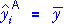
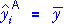
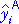

| Model | Explanatory variables |
Model | Fitted values (predicted response) |
No of parameters |
|---|---|---|---|---|
| A | None |  | 1 | |
| B | X | 2 | ||
| C | X & Z | 3 |
This page gives some general results that extend analysis of variance methods to test hypotheses about more complex models.
Comparing the fit of three models
The sequential sums of squares that were described earlier in this section actually describes the difference between the fit of three models:
| Model | Explanatory variables |
Model | Fitted values (predicted response) |
No of parameters |
|---|---|---|---|---|
| A | None |  | 1 | |
| B | X | 2 | ||
| C | X & Z | 3 |
We now generalise this to any sequence of general linear models of increasing complexity — each model adds to the flexibility of the previous model with extra parameters.
| Model | Fitted values (predicted response) |
|---|---|
| A. Simplest model |  |
| B. More complex model | |
| C. Most complex model |
Provided each model has at least the flexibility of the previous model in the sequence, each can provide fitted values that are closer to the observed response values than the previous model.
| improvement of model B over model A |
improvement of model C over model B |
residual (unexplained by most complex model) |
||||
Provided parameter estimates and fitted values for all three models are obtained by least squares, the sums of squares of the components satisfy a similar relationship:
| SSTotal | SSB|A | SSC|B | SSResid | |||
The component sums of squares are sequential sums of squares and can be used to compare the fit of the models with an analysis of variance test.
Degrees of freedom
We mentioned above that the sequence of models should be of increasing complexity, with each model allowing the previous model as a special case.
The degrees of freedom for the sum of squares comparing two models equals the difference in the number of parameters.
Analysis of variance table
The sums of squares and their degrees of freedom are again arranged in a table with extra columns:
If model A is the simplest model with no explanatory variables, the full anova table is:

The F ratios on the right can be used to test whether there is any improvement when moving from any model to a more complex one.
These general ideas will become clearer when we examine special cases in the next section.